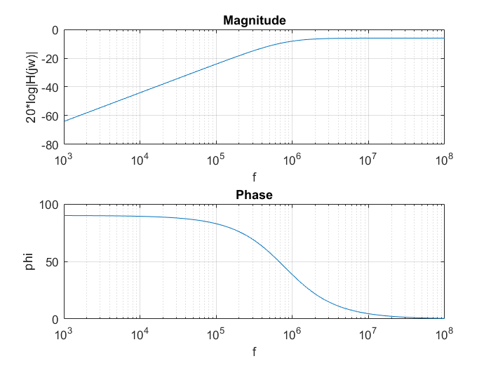

%Reibenwein Lukas 5AHEL KN 16 Uebertragungsfunktion.m function[]= Uebertragungsfunktion(KN,fstart,fende,Resx) %KN: Katalognummer Schüler %fstart, fende: Bestimmen Frequenzbereich, in dem simuliert wird %Resx: Anzahl Datenpunkte auf der x-Achse %Berechnet R, L und C R=KN*1000; L=KN*0.0001; C=KN*0.0000001; %Berechnet Array mit allen (Kreis-)Frequenzwerten zwischen fstart und fende %Auflösung: (fende-fstart)/Resx f=fstart:(fende-fstart)/Resx:fende; w=2*pi*f; %Bestimmt welches Beispiel ausgewählt wird x=mod(KN,12); for i=1:1:Resx+1 %Berechnet komplexen Widerstand von L und C bei der aktuellen Frequenz XL=1i*w(i)*L; XC=(-1i)/(w(i)*C); %Berechnet, abhängig von der KN eine andere Übertragungsfunktion if x==1 %RC-TP H(i)=XC/(R+XC); elseif x==2 %RL-HP H(i)=XL/(R+XL); elseif x==3 %RC-TP+Rp H(i)=(1/(1/R+1/XC))/(R+(1/(1/R+1/XC))); elseif x==4 %RC-HP+Rp H(i)=(1/(1/R+1/XL))/(R+(1/(1/R+1/XL))); elseif x==5 %Serienschwingkreis H(i)=R+XL+XC; elseif x==6 %Parallelschwingkreis H(i)=1/(1/R+1/XL+1/XC); elseif x==7 %CRC-Netzwerk H(i)=XC/(1/(1/XC+1/(XC+R))); elseif x==8 %RCR-Netzwerk H(i)=(R+XC)/(R+XC); elseif x==9 %LRL-Netzwerk H(i)=XL/(1/(1/XL+1/(XL+R))); elseif x==10 %RLR-Netzwerk H(i)=(R+XL)/(R+XL); elseif x==11 %CLC-Netzwerk(Serien+Parallelschwingkreis) H(i)=XC/(1/(1/XC+1/(XC+XL))); elseif x==0 %LCL-Netzwerk(Serien+Parallelschwingkreis) H(i)=XL/(1/(1/XL+1/(XL+XC))); end end %Teilt die komplexe Größe in Real- und Imaginärteil mag=abs(H); phase=angle(H); %wählt Subplot 1 aus subplot(2,1,1); %Bei Bsp 5&6 Z(jw), da komplexer Widerstand gefragt %Beim Rest: 20*lg10|H(jw)| %semilogx(): x-achse wird logarythmisch aufgetragen if((x==5)||(x==6)) semilogx(f,mag) ylabel('|Z(jw)|'); else semilogx(f,20*log10(mag)) ylabel('20*log|H(jw)|'); end %Beschriftet Diagramm, aktiviert Raster title('Magnitude'); xlabel('f'); grid on; %wählt Subplot 2 aus subplot(2,1,2); %semilogx(): x-achse wird logarythmisch aufgetragen semilogx(f,radtodeg(phase)) %Beschriftet Diagramm, aktiviert Raster title('Phase'); xlabel('f'); ylabel('phi'); grid on;